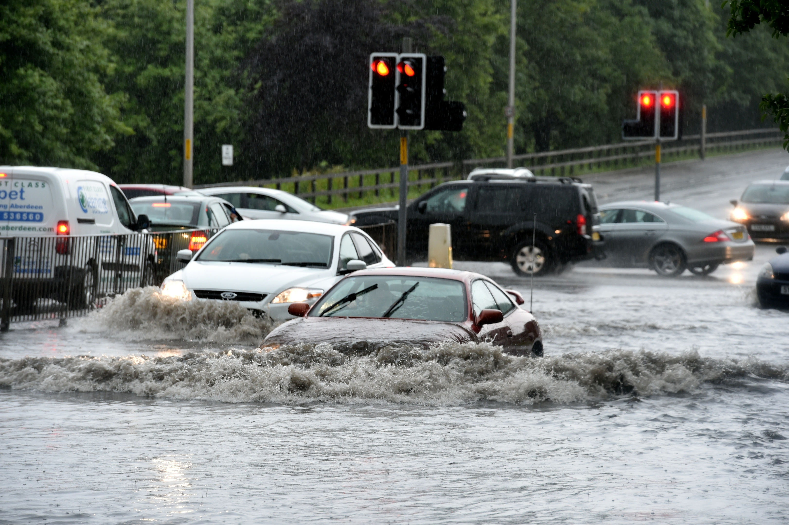
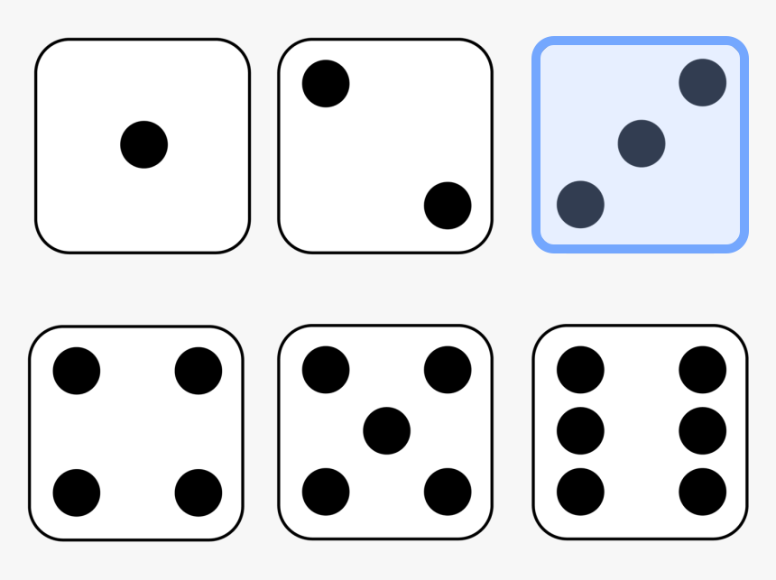
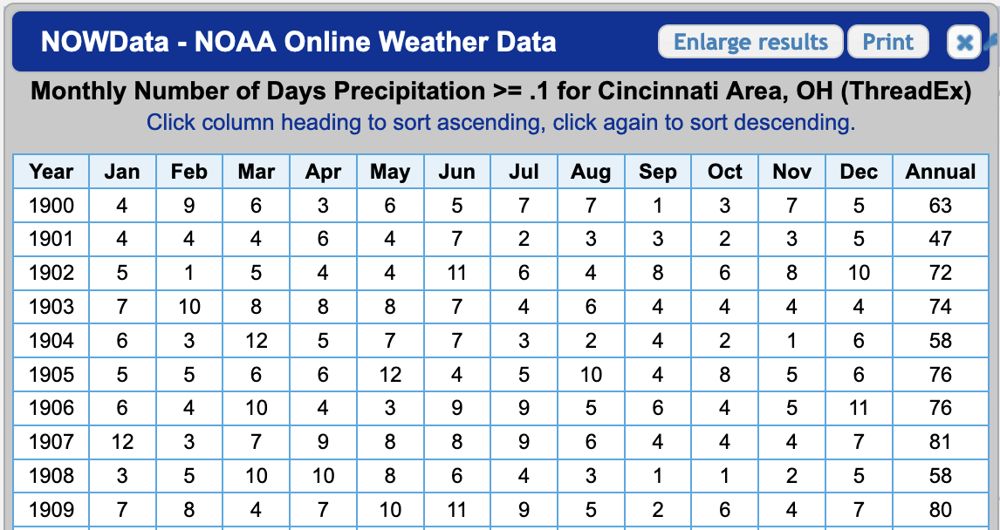

(or “Will It Rain on My Parade?”)
It is very exciting to break open a textbook on statistics again.
I doubt many people have ever said that, but in my case, it rings true!
To prepare for Master’s-level coursework this Fall, I am revisiting statistical concepts and coursework. I will be writing a small entry about something I learned each week.
This will not be a math-heavy, rigorous write-up, but will instead focus on finding an idea that ANYONE can walk away with and make use of.
My first entry will answer a very basic question:
What is Probability?
In short, probability is all about expectations. We can never KNOW what is going to happen in the future, but we can use data to make an informed guess.

“Do we need to make a rain-out plan for our party?”This ability to quantify your expectations accurately can be incredibly useful. (Note: it can also be not terribly useful, but still entertaining…)
How Do We Generate Probabilities?
You might be surprised to learn that there are multiple ways to arrive at a probability. Luckily, you should already be familiar with most of these, as the examples below will make clear.
THEORETICAL
Theoretical probability is pretty simple (in theory). It is defined by assessing all possible states of your system, and determining how many of them fit your criteria.
Example: You have a fair die, with 6 sides. You can then calculate that the odds of rolling a 3 as being 1/6.

Probability of rolling a 3 = 16.67%
Whe you’d use this: Theoretical probability is aptly named, as it generally not applicable for real-world problems. When your system is more complex than a coin flip, it quickly gets cumbersome. Even using a coin is perilous, as individual coins are never perfectly fair.
FREQUENTIST
Frequentist probability is the method most of us are familiar with. You directly observe the phenomenon play out, over and over. As you see more examples, your probablility estimate generally becomes more accurate.
Example: You roll your fair die 1,000 times*. You find that over these 1,000 rolls, you got 158 rolls where 3 appeared.
*to save you a few hours of rolling dice, I am using R to simulate these rolls. The code is at the end of this post.

Probability of rolling a 3 = 15.8%
This result is reasonably close to our “theoretical” probability of 1/6 (16.67%)! Let’s see if we can do better…
Now, you roll that same die 10,000 times:
 The number 3 turned up 1,704 times over your 10,000 trials.
The number 3 turned up 1,704 times over your 10,000 trials.
Probability of rolling a 3 = 17.04%
As you can see, as we gather more observations, our estimated probability trends closer to the theoretically “correct” value of 1/6 (16.67%).
When you’d use this: When we have repeated observations to work with. Probabilities based on direct observation can be very easy to understand, collect, and interpret.
SUBJECTIVE
Subjective probability is a bit more complex. Instead of using past observations to calculate our probability, we use the strength of our beliefs to assign a probability.
This approach is perhaps a bit less intuitive, so I plan to cover Bayesian statistics in more depth in later posts.
When you’d use this: When we don’t have many past observations OR we don’t want to generate “events” (for ethical or cost reasons).
For example, if we wanted assess how likely it is for a new rocket prototype to fail, it wouldn’t be practical to shoot 100 rockets up and count how many blow up (ie. a Frequentist approach).
Probability in Daily Life
One practical lesson about probability that you can take away is:
Even if we don’t know everything, we can still plan effectively using what we do know.
Case-in point: Let’s say I wanted to organize a parade. Obviously, nobody wants to have a parade on a rainy day, so I want my parade to happen at a time it is least likely to have rainfall.
There is actually historical data on rainy days we can access from Weather.gov back through 1900. This should prove helpful for making our decision!

Using this data, we can calculate the long-run average number of rainy days for each month over the last ~120 years.
Plotting the result gives us a clear picture of what to expect for each month:
 So, our best bet for planning a rain-free parade in Cincinnati would be in September, or possibly October. These months provide a noticeable improvement in our odds:
So, our best bet for planning a rain-free parade in Cincinnati would be in September, or possibly October. These months provide a noticeable improvement in our odds:
- September/October: 1/6 chance of rain
- March/April/May: 1/4 chance of rain
While we haven’t eliminated the possiblity of a rainy parade, we can use historical data to find best odds for getting our desired outcome.
Summing Up
Uncertainty is a given in life, and probability is key for making informed decisions when you don’t know exactly what will happen.
As we’ve seen in our example, even with just some rudimentary data, we can significantly reduce the risk of having a bad day.
As we’ll see next week, when we feed in more detailed information, we actually can refine these probabilities even further. Stay tuned!
===========================
R code used to generate plots:
- Dice Roll Simulation:
library(data.table)
library(ggplot2)
library(waffle)
set.seed(060124)
### Generate 1000 dice rolls
dice_rolls <- sample(1:6, 1000, replace = TRUE) |> as.data.table()
dice_rolls[,is_3:=ifelse(V1 == 3, "1", "0")]
results <- dice_rolls[,.N, by = .(is_3)]
### Plot in a waffle chart
ggplot(results, aes(fill = is_3, values = N)) +
geom_waffle(n_rows = 20, size = 0.33, colour = "white") +
theme_void() +
scale_fill_manual(
name = NULL,
values = c("#e6e8e8", "#97b5cf"),
labels = c("Not 3", "3")
) +
theme(legend.position="none") +
annotate("text", x=46, y=10, label= "bolditalic(158)",
col="white", size=12, parse=TRUE)
### Generate 10000 dice rolls
dice_rolls <- sample(1:6, 10000, replace = TRUE) |> as.data.table()
dice_rolls[,is_3:=ifelse(V1 == 3, "1", "0")]
results <- dice_rolls[,.N, by = .(is_3)]
### Plot in a waffle chart
ggplot(results, aes(fill = is_3, values = N)) +
geom_waffle(n_rows = 100) +
theme_void() +
scale_fill_manual(
name = NULL,
values = c("#e6e8e8", "#97b5cf"),
labels = c("Not 3", "3")
) +
theme(legend.position="none") +
annotate("text", x=92, y=50, label= "bolditalic(1704)",
col="white", size=11, parse=TRUE)
- Rainy Days in Cincinnati
library(data.table)
library(ggplot2)
library(scales)
### Import NOAA data, 1900 - 2023
rain <- fread("Rain_Data.csv")
### Get averages by month
monthly <- rain[, lapply(.SD, mean)] |> melt()
monthly[,month_abbr:=substr(variable, 0,3)]
monthly[,month_days:=c(0,31,28,31,30,31,30,31,31,30,31,30,31)]
monthly[,daily_prob:=value/month_days]
ggplot(monthly[variable!="Year"], aes(x=variable, y = daily_prob, label=percent(daily_prob))) +
geom_col() +
geom_col(monthly[variable=="September"], mapping = aes(x=variable, y = daily_prob), fill = "red") +
geom_text(size = 2.5, col = "white", vjust = 2) +
ggtitle("Probability of a Rainy Day (Cincinnati, 1900 - present)") +
theme(axis.text.x = element_text(angle = 90, vjust = 0.5, hjust=1),
axis.title.x=element_blank(),
axis.title.y=element_blank()) +
scale_y_continuous(labels = scales::percent)